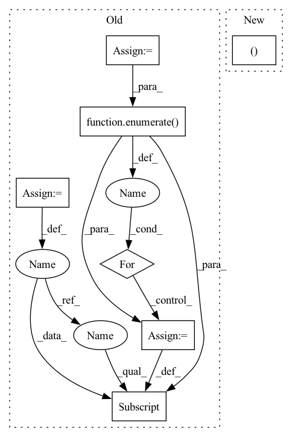

Pattern ID :25887
Before Change
first_h_a = self.initHidden_alpha(x.shape[1])
first_h_b = self.initHidden_beta(x.shape[1])
self.emb = self.embedding(x)
if self.drop < 1:
self.emb = self.dropout(self.emb)
count = np.arange(x.shape[0]) + 1
self.c_t = torch.zeros_like(self.emb) // shape=(seq_len, batch_size, day_dim)
for i, att_timesteps in enumerate( count):
// 按时间步迭代，计算每个时间步的经attention的gru输出
self.c_t[i] = self.attentionStep(first_h_a, first_h_b, att_timesteps)
if self.drop < 1.0:
self.c_t = self.dropout(self.c_t)After Change
x = self.proj(x)
x = self.dropout(x)
out = torch.zeros((batch_size, time_steps, self.hidden_dim ))
for cur_time in range(time_steps):
cur_x = x[:, : cur_time + 1, :]In pattern: SUPERPATTERN
Frequency: 3
Non-data size: 7
Instances Fragment ID: 78251528
Project Name: yhzhu99/covid-ehr-benchmarks
Commit Name: b3d4ba85ad8e8cfeb3e45e07e5fadfa3fd4a25fa
Time: 2022-06-25
Author: yhzhu99@gmail.com
File Name: app/models/backbones/retain.py
M Class Name: RETAIN
N Class Name: RETAIN
M Method Name: forward(2)
N Method Name: forward(2)
M Parent Class: nn.Module
N Parent Class: nn.Module
M File Name: app/models/backbones/retain.py
N File Name: app/models/backbones/retain.py
M Start Line: 64
M End Line: 83
N Start Line: 44
N End Line: 53
Before Change
if self.drop < 1:
self.emb = self.dropout(self.emb)
count = np.arange(x.shape[0]) + 1
self.c_t = torch.zeros_like(self.emb) // shape=(seq_len, batch_size, day_dim)
for i, att_timesteps in enumerate( count):
// 按时间步迭代，计算每个时间步的经attention的gru输出
self.c_t[i] = self.attentionStep(first_h_a, first_h_b, att_timesteps)
if self.drop < 1.0:
self.c_t = self.dropout(self.c_t)After Change
return out
def forward(self, x):
batch_size, time_steps, _ = x.size()
x = self.proj(x)
x = self.dropout(x)
Fragment ID: 78251532
Project Name: yhzhu99/covid-ehr-benchmarks
Commit Name: b3d4ba85ad8e8cfeb3e45e07e5fadfa3fd4a25fa
Time: 2022-06-25
Author: yhzhu99@gmail.com
File Name: app/models/backbones/retain.py
M Class Name: RETAIN
N Class Name: RETAIN
M Method Name: forward(2)
N Method Name: forward(2)
M Parent Class: nn.Module
N Parent Class: nn.Module
M File Name: app/models/backbones/retain.py
N File Name: app/models/backbones/retain.py
M Start Line: 64
M End Line: 83
N Start Line: 44
N End Line: 53
Before Change
// 种类id
_catid2clsid = {}
_clsid2catid = {}
_clsid2cname = {}
with open(train_path, "r", encoding="utf-8") as f2:
dataset_text = ""
for line in f2:
line = line.strip()
dataset_text += line
eval_dataset = json.loads(dataset_text)
categories = eval_dataset["categories"]
for clsid, cate_dic in enumerate( categories):
catid = cate_dic["id"]
cname = cate_dic["name"]
_catid2clsid[catid] = clsid
_clsid2catid[clsid] = catid
_clsid2cname[clsid] = cname
class_names = []
num_classes = len(_clsid2cname.keys())After Change
train_pre_path = os.path.join(self.data_dir, self.name)
// 种类id
_catid2clsid, _clsid2catid, _clsid2cname, class_names = get_class_msg(train_path)
train_dataset = COCO(train_path)
train_img_ids = train_dataset.getImgIds() Fragment ID: 78251522
Project Name: miemie2013/miemiedetection
Commit Name: a5dd8c31e9edef5be2b76cece461f06a9d7d23b5
Time: 2021-12-21
Author: 53960695+miemie2013@users.noreply.github.com
File Name: mmdet/data/datasets/coco.py
M Class Name: PPYOLO_COCOTrainDataset
N Class Name: PPYOLO_COCOTrainDataset
M Method Name: __init__(10)
N Method Name: __init__(10)
M Parent Class: torch.utils.data.Dataset
N Parent Class: torch.utils.data.Dataset
M File Name: mmdet/data/datasets/coco.py
N File Name: mmdet/data/datasets/coco.py
M Start Line: 379
M End Line: 404
N Start Line: 380
N End Line: 442
Before Change
// 种类id
_catid2clsid = {}
_clsid2catid = {}
_clsid2cname = {}
with open(val_path, "r", encoding="utf-8") as f2:
dataset_text = ""
for line in f2:
line = line.strip()
dataset_text += line
eval_dataset = json.loads(dataset_text)
categories = eval_dataset["categories"]
for clsid, cate_dic in enumerate( categories):
catid = cate_dic["id"]
cname = cate_dic["name"]
_catid2clsid[catid] = clsid
_clsid2catid[clsid] = catid
_clsid2cname[clsid] = cname
class_names = []
num_classes = len(_clsid2cname.keys())
for clsid in range(num_classes):After Change
val_pre_path = os.path.join(self.data_dir, self.name)
// 种类id
_catid2clsid, _clsid2catid, _clsid2cname, class_names = get_class_msg(val_path)
val_dataset = COCO(val_path)
val_img_ids = val_dataset.getImgIds() Fragment ID: 78251553
Project Name: miemie2013/miemiedetection
Commit Name: a5dd8c31e9edef5be2b76cece461f06a9d7d23b5
Time: 2021-12-21
Author: 53960695+miemie2013@users.noreply.github.com
File Name: mmdet/data/datasets/coco.py
M Class Name: PPYOLO_COCOEvalDataset
N Class Name: PPYOLO_COCOEvalDataset
M Method Name: __init__(7)
N Method Name: __init__(7)
M Parent Class: torch.utils.data.Dataset
N Parent Class: torch.utils.data.Dataset
M File Name: mmdet/data/datasets/coco.py
N File Name: mmdet/data/datasets/coco.py
M Start Line: 302
M End Line: 327
N Start Line: 326
N End Line: 330